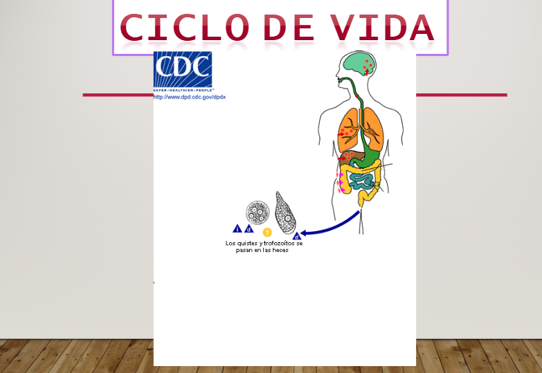
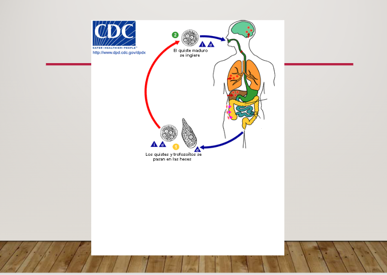
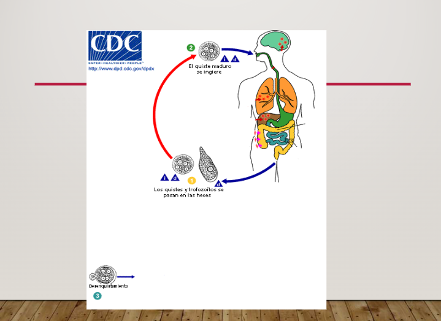
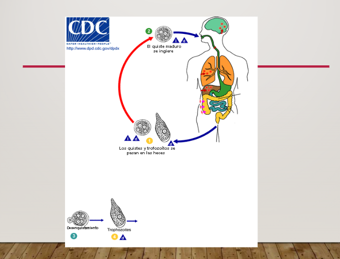
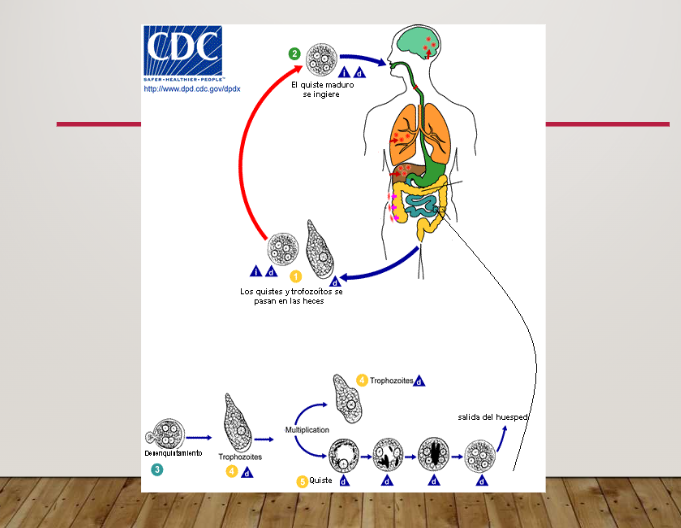
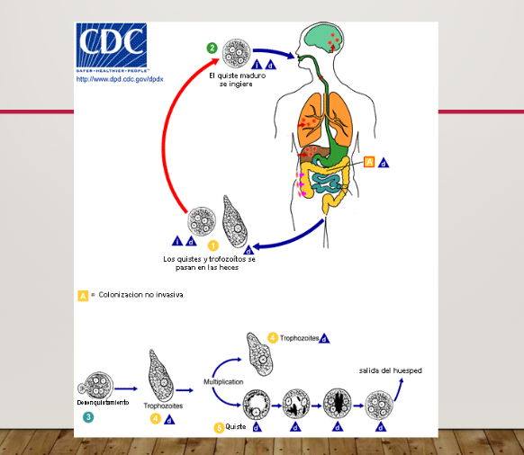
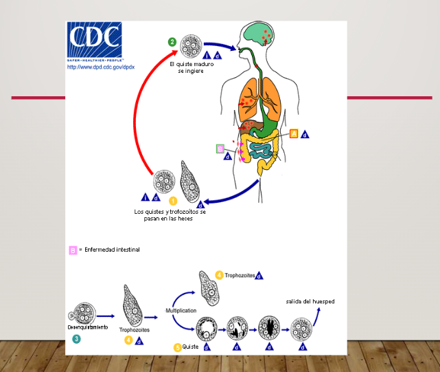
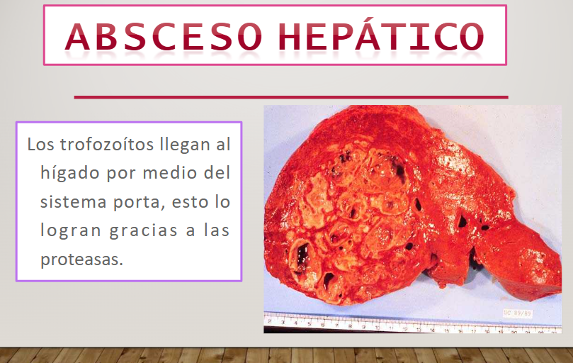
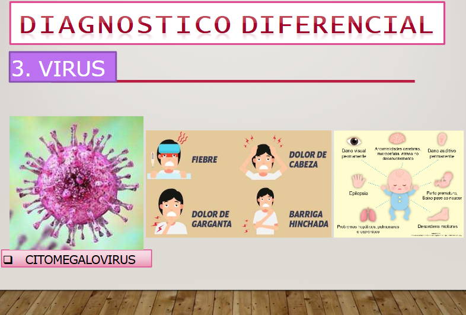

Tema 2 — Amebiasis (Entamoeba histolytica)
1. Fases
1.1 Trofozoito
- Forma vegetativa ameboide
- Membrana plasmática sin pared celular
- Citoplasma con 2 porciones: Ectoplasma (externa) y Endoplasma (contiene los orgánulos)
- Núcleo esférico — endosoma — centrosoma
- Tamaño: 20 a 360 micrómetros
- Forma minuta (20) y magna (60)
1.2 Quiste
- Si se les quitan los nutrientes se deja de diferenciar el endoplasma y ectoplasma
- Forma esférica
- Pérdida de seudópodos
- Pared quística
- Se guardan vacuolas de reserva de glucógeno y cuerpos cromatoides
- Núcleos
- Forma infectante de la Entamoeba
2. Epidemiología
- Áreas con clima templado caluroso son las zonas de mayor ENDEMIA.
- Mayor frecuencia en VARONES ADULTOS.
- Grupo de Protozoosis transmitida por Fecalismo.
- 10% de la población mundial está infectada. 90% asintomática.
- Cada año 50 millones de casos de amebiasis: 100 mil son fatales.
3. Ciclo de Vida
Diagrama — Ciclo de vida de E. histolytica







- Imagen 5: CICLO DE VIDA — "Los quistes y trofozoítos pasan en heces"
- Imagen 6: "Los quistes y trofozoítos pasan en las heces"
- Imagen 7: "Los quistes y trofozoítos pasan en heces"
- Imagen 8: "Pasan en las heces"
- Imagen 9: "Los quistes y trofozoítos pasan en heces"
- Imagen 10: "Los quistes y trofozoítos se pasan en heces" — "Colonización invasiva" — "Quiste"
- Imagen 11: "Los quistes y trofozoítos se pasan en heces" — "Enfermedad intestinal" — "Trofozoítos" — "Quiste"
Esquema resumen del ciclo
- Ingresa Quiste
- Enfermedad (Trofozoito)
- Proliferación (trofozoítos)
- Hematógena
- Extensión directa
- Absceso de pulmones
- Absceso de Hígado
- Multiplicación (trofozoítos)
- Diarrea
- Ulceración
- Salida de quistes en las heces
(Localización de E. histolytica — Petri, 1993)
4. Virulencia
4.1 Invasión del epitelio intestinal
- Adhesión
- Acción de enzimas:
- Mucinasa
- Hialuronidasa
- Ribonucleasa
- Desoxirribonucleasa
- Ayudan a que haya citólisis e invasión
- Acción de toxinas:
- Enterotoxinas que generan manifestaciones
4.2 Eritrofagia (vacuolas)
- Destrucción de eritrocitos en el citoplasma
- Produce traumatismo celular directo
- Formación de úlceras circunscritas ("Botón de camisa" o "fondo de botella")
- Erosiona vasos sanguíneos
- Por vía sanguínea va al hígado (contigüidad)
- Del hígado a cualquier otro órgano
5. Patogenia
Modificaciones
- Acortamiento y aplanamiento de vellosidades intestinales
- Modificación de permeabilidad
- Formación de canales
- Desprendimiento de las células epiteliales
- Daños a orgánulos de la célula tisular
6. Transmisión
- Contaminación: agua, vegetales, frutas, etc. que no se han tratado con la higiene adecuada. Alimentos mal cocinados.
- Modo de transmisión: Ruta fecal-oral.
- Vectores: Moscas y cucarachas.
- Fuente de infección: el hombre infectado, enfermo o asintomático.
- Reservorio: el hombre
Factores de Riesgo
- NO LAVADO DE MANOS
- COMER EN CALLE
- ALIMENTO CONTAMINADO
- ACTIVIDAD SEXUAL
- SIRROFAGIA
- SISTEMA DE RIEGO CONTAMINADO
- PORTADORES ASINTOMÁTICOS
- DEFENSAS BAJAS
Referencia visual: Factores de riesgo — detalle

7. Otras Amebas
| Característica | E. histolytica | E. gingivalis | Endolimax nana | Iodamoeba butschlii |
|---|---|---|---|---|
| Núcleos | 1 - 4 núcleos | Un único núcleo | Hasta 8 núcleos | Un único núcleo |
| Cariosoma | Cariosoma central | Cariosoma pequeño | Cariosoma central excéntrico | Grandes cariosomas |
| Cromatina periférica | Cromatina periférica homogénea | — | Cromatina periférica irregular | — |
| Cuerpos cromatoidales | Cuerpos cromatoidales (grano de arroz) | — | Cuerpos de inclusión | — |
| Otras características | — | — | — | Gran vacuola de glucógeno |
8. Amebiasis Extraintestinales
8.1 Absceso hepático amebiano
- Causa: Invasión, trombosis y diseminación a través de vasos porta
- Inicio: Focos necróticos → Microabscesos
- Contenido: Líquido color marrón "chocolatado" inoloro
- Bordes: Trofozoítos
- Síntomas:
- Fiebre moderada intermitente
- Dolor (irradiación HCD)
- Hepatomegalia
- Síntomas pulmonares
- Diagnóstico: Ecografía, ELISA, Radiografía Simple, TAC
8.2 Complicaciones
- Ruptura peritoneal, pleural, pulmonar, pericárdico
- Diseminación a distancia
8.3 Amebiasis pleuro-pulmonar
- Causa: Ruptura de absceso hepático (contigüidad)
8.4 Amebiasis cutánea y mucosas
- Causa: Diseminación fecal (perianal) por fístulas
- Morfología: Úlceras de bordes prominentes enrojecidos. Fondo húmedo, granuloso, necrótico de olor fétido
8.5 Absceso cerebral
- Causa: Diseminación hematógena
8.6 Absceso hepático (detalle)
- Los trofozoítos llegan al hígado por medio del sistema porta, esto lo logran gracias a las proteasas.
8.7 Amebiasis pleuropulmonar, cardíaca, cerebral
- Por lo general se presenta en personas con amebiasis hepática.
- Imagen hipodensa en todo el lóbulo hepático izquierdo — compatible con absceso hepático.
8.8 Amebiasis cutánea
- Úlceras de bordes definidos, sangrantes, dolorosas y de crecimiento rápido
- Amebiasis mucocutánea genital del lactante
- También glúteos y genitales (úlceras)
9. Diagnóstico Diferencial
9.1 Amebas no patógenas
- ENTAMOEBA DISPAR
- ENTAMOEBA COLI
- ENTAMOEBA HARTMANNI
9.2 Bacterias
- SHIGELLA
- SALMONELLA
- CLOSTRIDIOIDES DIFFICILE
- Diarrea
- Fiebre
- Dolor de estómago
- Náuseas y/o vómitos
9.3 Virus

- DOLOR DE CABEZA
- FIEBRE
- DOLOR DE GARGANTA
- BARRIGA HINCHADA
- CITOMEGALOVIRUS
9.4 Parásitos
- Protozoario ciliado: Disentería con úlceras intestinales y diarrea con sangre
- Diarrea acuosa crónica: Malabsorción, flatulencia y dolor epigástrico
- BALANTIDIUM COLI
- GIARDIA LAMBLIA
9.5 Enfermedad inflamatoria intestinal
- PÉRDIDA DE PESO
- DIARREA
- DOLOR ABDOMINAL Y CÓLICOS
- SANGRE EN LAS HECES
- FIEBRE Y FATIGA
- REDUCCIÓN DE APETITO
- COLITIS ULCERATIVA
10. Diagnóstico
10.1 Diagnóstico Directo
- CULTIVO
- Tinción con HEMATOXILINA FÉRRICA o TRICRÓMICA
- Puede ser muestra única o seriadas (Lunes, Miércoles, Viernes)
- COPROPARASITOSCÓPICO
- MICROSCÓPICA
10.2 Diagnóstico Indirecto
- SEROLOGÍA — ELISA
- PCR:
- Extraer el ADN de muestras de heces
- Amplificar el ADN mediante PCR tiempo real
- DETECCIÓN DE ANTÍGENOS
10.3 Diagnóstico — Técnicas de Gabinete
- ULTRASONIDO: Abscesos, imágenes hipoecoicas — Localización, tamaño, pared
- TC / RM
- ENDOSCOPIA
- RADIOGRAFÍAS:
- Botón de camisa
- Biopsias
- Elevación hemidiafragma, derrame pleural